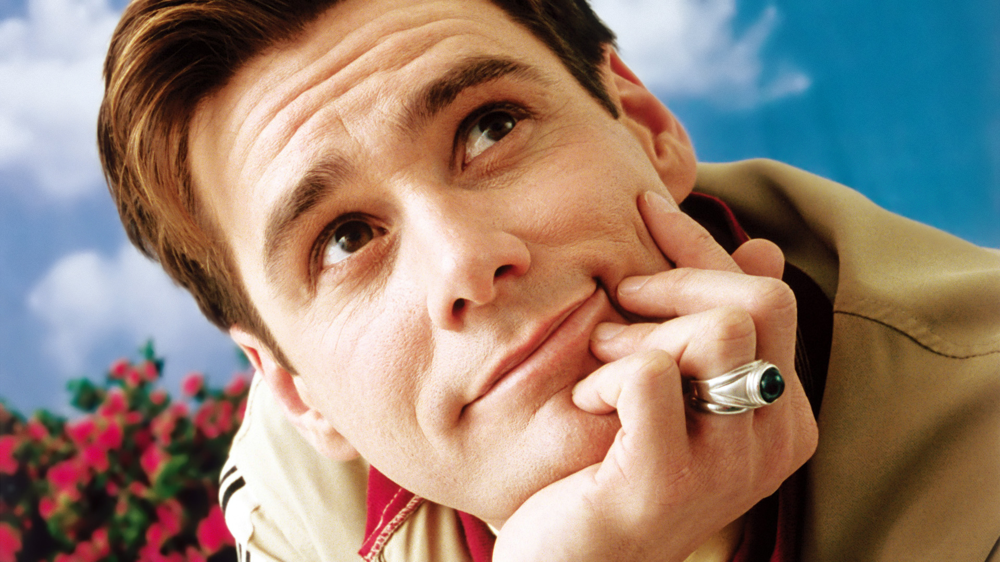
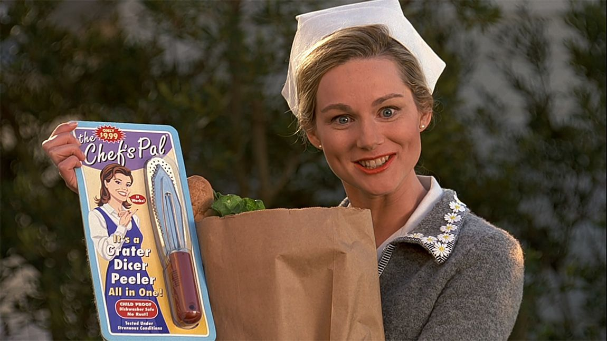
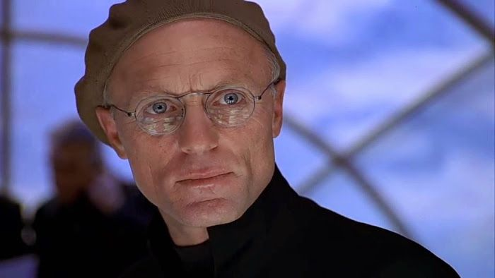
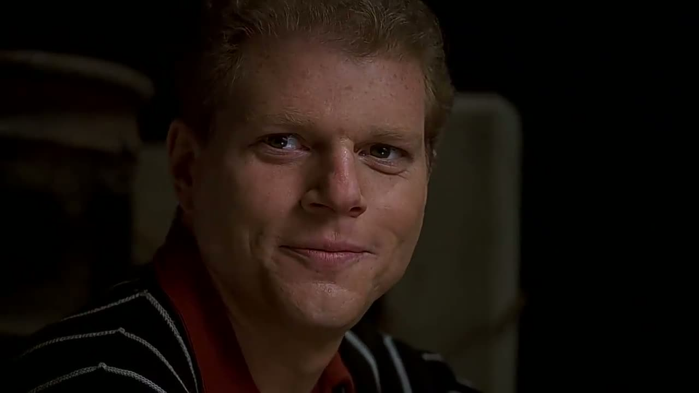
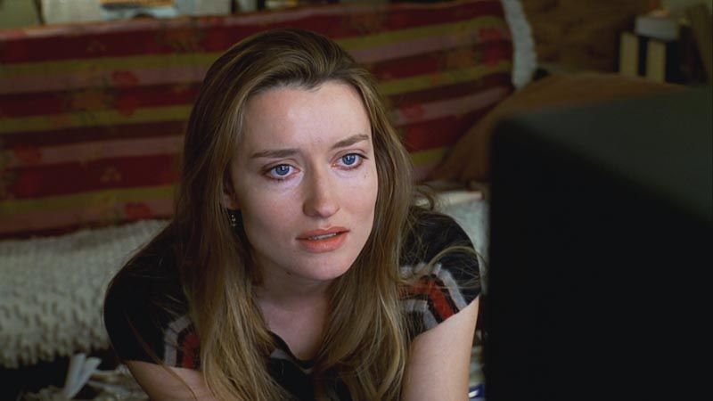

- Plot
- Cast
- production
- Soundtrack
- Jim Carrey as Truman Burbank
Chosen out of five unwanted pregnancies to be the first child legally adopted by a corporation, Truman is unaware that his daily life is broadcast continuously around the world. He has a job in the insurance business and a wife, but he eventually notices that his environment is not what it seems to be. Robin Williams was considered for the role, but Weir cast Carrey after seeing him in Ace Ventura: Pet Detective because Carrey's performance reminded him of Charlie Chaplin. Carrey took the opportunity to proclaim himself as a dramatic actor, rather than being typecast in comedic roles. Carrey, who was then normally paid $20 million per film, agreed to do The Truman Show for $12 million. Carrey and Weir initially found working together on set difficult (Carrey's contract gave him the power to demand rewrites), but Weir was impressed with Carrey's improvisational skills, and the two became more interactive. The scene in which Truman declares "this planet Trumania of the Burbank galaxy" to the bathroom mirror was Carrey's idea.

- Laura Linney as Hannah Gill, acting as Meryl Burbank, Truman's wife.
A nurse at the local hospital. Since the show relies on product placement for revenue, Meryl regularly shows off various items she has recently "purchased", one of the many oddities that makes Truman question his life. Her role is to act the part of Truman's wife and ultimately to have a child by him, despite her reluctance to accomplish either. Linney heavily studied Sears catalogs from the 1950s to develop her character's poses.

- Ed Harris as Christof
The creator of The Truman Show. Christof remains dedicated to the program at all costs, often overseeing and directing its course in person, rather than through aides. Dennis Hopper was originally cast in the role, but he left in April 1997 (during filming) over "creative differences". Harris was a last-minute replacement. Hopper later stated he was fired after two days because Weir and producer Scott Rudin had made a deal that if they didn't both approve of Hopper's performance, they would replace him. A number of other actors had turned down the role after Hopper's departure. Harris considered making Christof a hunchback, but Weir did not like the idea.

- Noah Emmerich as Louis Coltrane, playing Marlon, Truman's best friend since early childhood.
Marlon is a vending machine operator for the company Goodies, who promises Truman he would never lie to him, despite the latest events in Truman's life. Emmerich has said, "My character is in a lot of pain. He feels really guilty about deceiving Truman. He's had a serious drug addiction for many years. Been in and out of rehab." Very little of this is shown in the finished film, but several deleted scenes depict Louis actively expressing guilt over Truman's situation, and in one sequence he spots Truman during his escape and purposely says nothing. His name is an amalgamation of two jazz musicians, Louis Armstrong and John Coltrane, and in one scene he plays trumpet.

- Natascha McElhone as Sylvia, playing Lauren Garland (Truman's college schoolmate)
Sylvia was hired to play a background extra, a fellow student at Truman's college, named Lauren. She became romantically involved with Truman and tried to reveal to him the truth about his life, but was thrown out of the show before she could do so. She then becomes a protester against The Truman Show, urging Christof to release its lead.

- Holland Taylor as Alanis Montclair, playing Truman's mother Angela Burbank.
- Brian Delate as Walter Moore, playing Truman's father Kirk Burbank.
- Paul Giamatti as Simeon (control room director)
- Jen Taylor as Contralto Singer
- Peter Krause as Laurence (Truman's boss)
- Harry Shearer as Mike Michaelson (TV talk show host)>